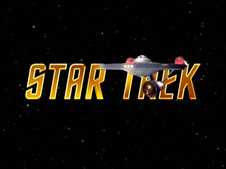
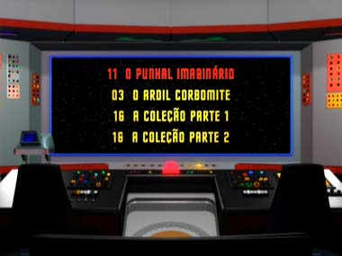
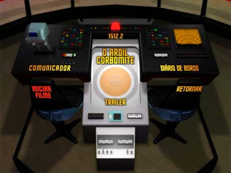
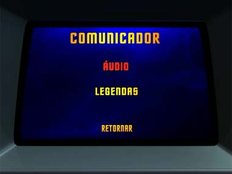
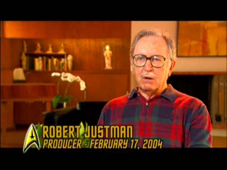
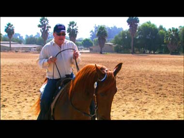
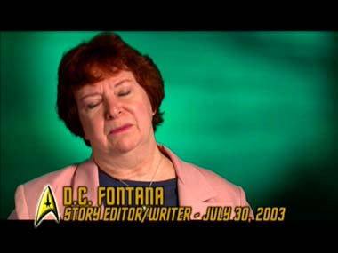
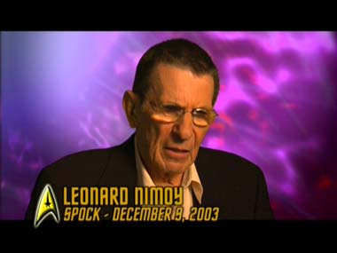
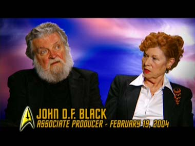
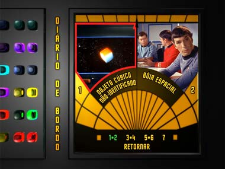

|
por
Salvador Nogueira
É
isso aí. Finalmente os fãs brasileiros verão Jornada nas Estrelas em DVD.
Nada de filmes. No bloody A, B, C, D or E. Estamos falando do começo de tudo,
a primeira temporada da Série Clássica, chegando ao mercado brasileiro.
Foi de fato quase uma missão de cinco anos -- desde os primeiros lançamentos
nos EUA, em pobres discos com dois episódios cada, nos anos 1999-2001, até a chegada
das bonitas coleções em box-set com temporadas completas a terras tupiniquins.
E já posso dizer com segurança que os brasileiros que se arriscaram a comprar
os DVDs americanos lançados no fim do milênio já podem se preparar para vendê-los.
O Trek Brasilis teve acesso aos discos de checagem do material que
chegará ao Brasil no fim deste mês, e, para começo de conversa, ele tem tudo que
os velhos discos tinham -- inclusive os trailers antigos da NBC, com um minuto
de duração, para cada um dos episódios.
A única coisa que deixa saudade
(ao menos neste fã que vos escreve) dos lançamentos originais é a ordem dos episódios.
Na coleção de 40 discos individuais, os episódios estavam organizados por ordem
de produção (que, em termos de cronologia, valores de produção e desenvolvimento
dos personagens, faz muito mais sentido). Agora, nos box-sets (tanto na versão
norte-americana como na brasileira), a ordem dos segmentos é a de exibição original
pela rede NBC.
Pode ser uma nova experiência para os fãs rever esses
episódios clássicos na ordem em que os primeiros telespectadores o viram, mas
é inegável que, para o "historiador" de Jornada nas Estrelas,
a ordem de produção é a que faz mais sentido (até mesmo as datas estelares ficam
menos embaralhadas deste modo!). Além disso, a numeração dos episódios ainda é
a de produção, o que cria um certo ruído na hora de selecionar um episódio pelos
menus.
Isso é basicamente a única crítica que se pode fazer ao trabalho
de organização dessas caixas que, não se enganem, são uma necessidade para
qualquer um que se considere fã de Jornada nas Estrelas. Como você sabe,
a primeira temporada da série em que tudo começou tem 29 episódios, sendo dois
deles o duplo "The Menagerie".
O piloto original, jamais exibido na TV, "The
Cage", não figura desta caixa, mas da terceira (que, não se preocupe,
estará no Brasil até o final de 2005, segundo informações obtidas pelo TB).
Não percamos tempo comentando os episódios em si (tudo que você pode querer saber
sobre eles está no nosso Guia de Episódios,
e vamos falar dessas belezinhas, que são os oito discos que iniciam a chegada
das séries (sim, eu disse "séries", no plural) de Jornada nas Estrelas
ao país. Os
menus
Trabalho de primeira linha.
Assim que você coloca qualquer um dos discos no seu aparelho e escolhe uma das
línguas possíveis para os menus (inglês, português e espanhol são as possibilidades),
verá a Enterprise clássica voando pela tela, sob um fundo com o texto "Star
Trek", estilizado, e a voz de Kirk, "Space... the final frontier". 
Um zoom na ponte até nos vermos dentro dela. Um giro de 180 graus e o menu
nos coloca em frente à tela principal, como se estivéssemos sentados na cadeira
do capitão. O trabalho de recriação da ponte é simplesmente espetacular, e temos
os característicos ruídos de fundo para acompanhar. Na tela, o telespectador pode
escolher entre qual dos episódios quer assistir (nos sete primeiros discos, há
quatro opções; no oitavo e último, há o último episódio da temporada, "Operation:
Annihilate!" e um link para os extras.
Todos os episódios
vêm com áudio em inglês, espanhol e português. A dublagem
brasileira é a da VTI-Rio, produzida depois que parte das originais, feitas
pela AIC-SP, foi destruída num incêndio. As legendas também têm versões trilingües.
Os extras só possuem legendas.
As opções de áudio e legendas são acessíveis
no painel de pilotagem do Sr. Sulu. Já a escolha de capítulos de cada episódio
é feita pelo painel do navegador, ocupado por Chekov a partir do segundo ano da
série.
Os menus são práticos, funcionais, rápidos e lindos. As traduções
para o português estão impecáveis. Sensacional. Imagem
dos episódios
A qualidade do vídeo
dos clássicos segmentos é limitada apenas pelos quarenta anos de armazenamento
nos cofres da Paramount Pictures. Mas todo o trabalho possível de restauração
foi feito para trazer as cores e a imagem da Série Clássica com a maior
vivacidade possível. A não ser que você já tenha visto algum episódio em DVD nos
discos estrangeiros, é certo que jamais terá visto esses segmentos com mais nitidez
e qualidade do que esta.  Áudio
dos episódios
O trabalho em áudio
ainda é mais impressionante, no som em inglês. É importante lembrar que a exibição
original da Série Clássica nos Estados Unidos foi feita em mono. Aqui temos
uma combinação moderna Dolby 5.1, feita a partir das fitas de áudio originais,
remasterizadas. A qualidade do som da dublagem, em dois canais, também é melhor
do que tudo que você já ouviu na televisão.  Comentários
Em quatro dos episódios ("Where
No Man Has Gone Before", "The
Conscience of the King", "The
Menagerie, Parts I & II"), há trilhas de comentários legendados
pelos especialistas em Jornada nas Estrelas Michael e Denise Okuda. Quem
já viu esse recurso nos DVDs dos filmes sabe que o conteúdo é imperdível. Extras
Chegamos, pois, ao bojo do material inédito contido nesses discos. Sobre
eles, há uma boa e uma má notícia. A boa é que os documentários incluídos são,
de uma forma geral, interessantes e bem-executados. A má é que não há nenhum material
em vídeo da época que seja desconhecido dos fãs. Nada de tomadas cortadas, erros
de gravação ou outros "documentos" da época em que Jornada nas Estrelas
estava em produção. Vamos agora a uma rápida passagem por todo o conteúdo.
O nascimento de um legado histórico (24 minutos)
Documentário
que reconta a criação do conceito de Jornada nas Estrelas, se concentrando
principalmente na produção dos pilotos "The
Cage" e "Where No Man Has
Gone Before". Destaque para entrevistas inéditas com elenco e equipe,
especialmente com o veterano Bob Justman, que trabalhou desde o primeiro piloto.
Gene Roddenberry também aparece, em entrevista concedida em 1988. 
A Vida Depois
de Jornada: William Shatner (10 minutos)
Protagonizado pelo ator
que interpreta James T. Kirk, somos dado a conhecer a paixão dele por cavalos,
além de suas habilidades como cavaleiro. Não tem nada a ver com Jornada,
mas os fãs de Bill Shatner certamente apreciarão. 
Audaciosamente
Indo... Ano Um (19 minutos)
Comentários sobre a qualidade do
conceito de Jornada nas Estrelas e sobre os melhores episódios do primeiro
ano da série. Embora muito se fale sobre "The
City on the Edge of Forever", o documentário passa batido na crise
gerada pelo episódio. Escrito originalmente por Harlan Ellison, famoso autor de
ficção científica, ele foi fortemente reescrito por Gene Roddenberry, o que causou
ruptura completa na relação dos dois. Ambos acabaram premiados com o "Oscar
do Sci-Fi", o Prêmio Hugo (Roddenberry pelo episódio e Ellison pelo roteiro
original), mas nunca se reconciliaram. Nada disso está aqui, num segmento que
trata a equipe de Jornada nas Estrelas como uma "família feliz".
Beijar e Falar: O Amor no Século 23 (8 minutos)
Um
pequeno segmento sobre as aventuras românticas de Kirk a bordo da USS Enterprise.
D.C. Fontana revela que o sucesso reprodutivo do capitão foi não-intencional,
do ponto de vista dos roteiristas, e William Shatner comenta os protestos que
teria feito por ter de agarrar todas aquelas mulheres lindas...

Reflexões sobre
Spock (12 minutos)
Um interessante depoimento de Leonard Nimoy
sobre o famoso Vulcano, incluindo a polêmica gerada por sua primeira auto-biografia,
intitulada "I Am Not Spock" (Eu não sou Spock). 
Visionários da Ficção Científica (17 minutos)
A análise
da formação da equipe de roteiristas de Jornada nas Estrelas, recrutados
entre famosos autores de ficção científica literária e de como isso ajudou a criar
um clima de seriedade para a série. Bom documentário com entrevistas inéditas
de D.C. Fontana, John D.F. Black e Bob Justman.

Diário de Fotos
Seqüência de imagens de publicidade da série, todas conhecidas e mais velhas
que andar para a frente. Fechando
a conta...
Embora os fãs pareçam
sempre arrumar alguma coisa para reclamar e para sentir falta (eu mesmo incluído),
é inegável que o box-set da primeira temporada da Série Clássica consegue
duas coisas dignas de aplausos: a primeira é trazer ao público a melhor apresentação
já feita desses episódios, em termos de qualidade audiovisual. A segunda, e mais
impressionante, é soprar vida nova a todos esses segmentos, que muitos admiradores
já conhecem de cor e salteado. Sem dúvida alguma, é um excelente modo de iniciar
o lançamento do material televisivo da franquia no Brasil, bem agora que estamos
ficando órfãos de episódios inéditos, com a conclusão de Enterprise nos
Estados Unidos. Que venha a segunda temporada! 
|